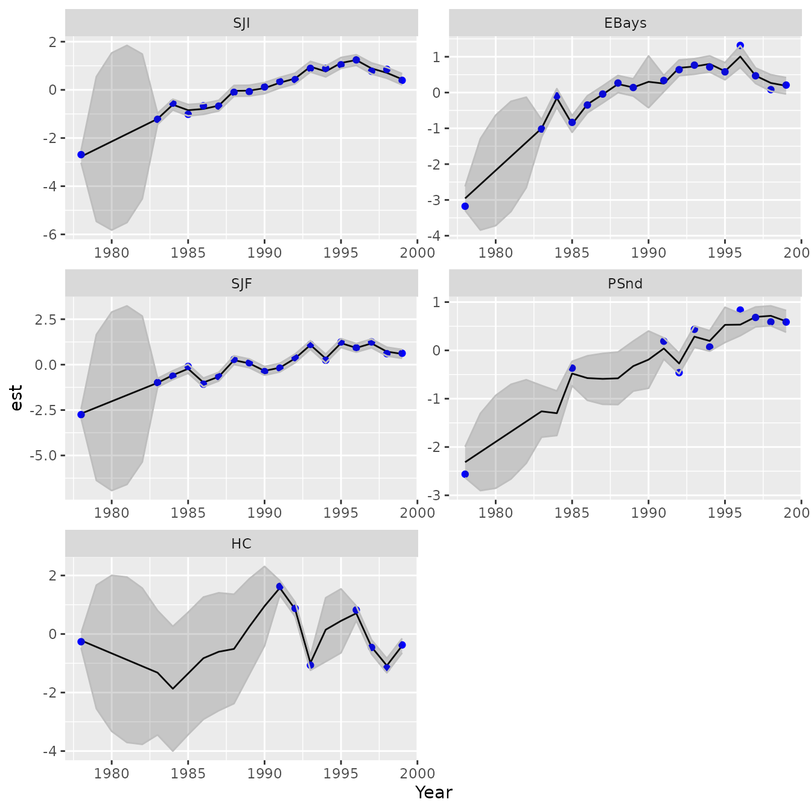
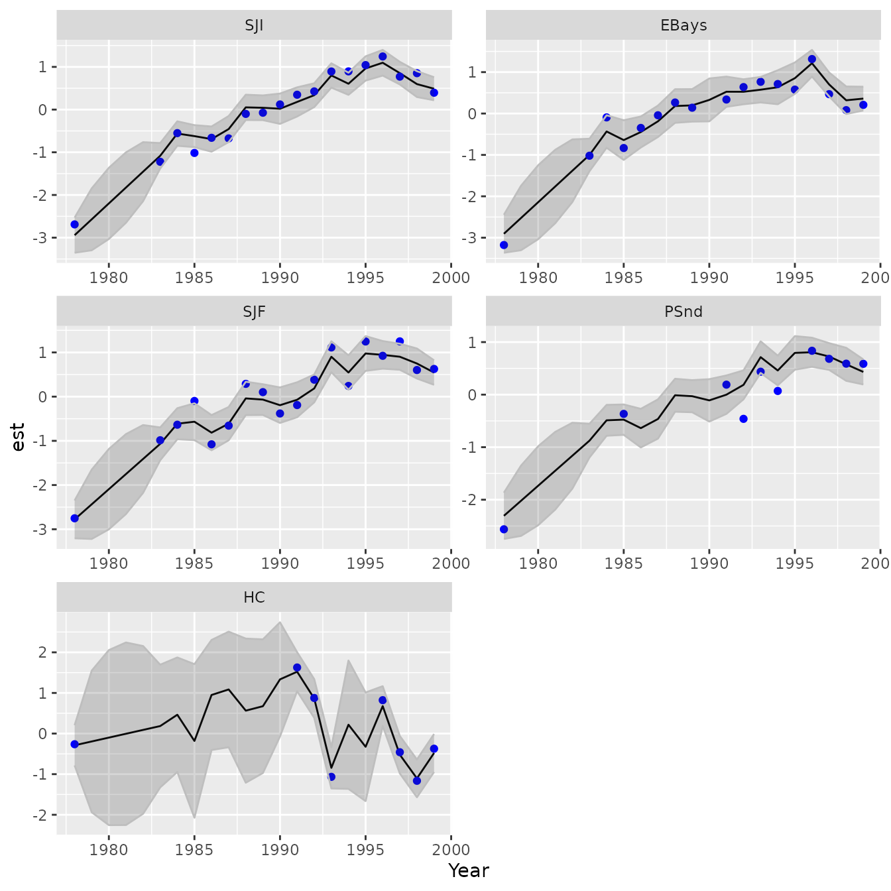

Dynamic factor analysis
James Thorson
Source:vignettes/dynamic_factor_analysis.Rmd
dynamic_factor_analysis.RmdDynamic factor analysis
dsem is an R package for fitting dynamic structural
equation models (DSEMs) with a simple user-interface and generic
specification of simultaneous and lagged effects in a potentially
recursive structure. Here, we highlight how DSEM can be used to
implement dynamic factor analysis (DFA). We specifically replicate
analysis using the Multivariate Autoregressive State-Space (MARSS)
package, using data that are provided as an example in the MARSS
package.
Using MARSS
We first illustrate a DFA model using two factors, fitted using MARSS:
# Load data
dat <- t(scale(harborSealWA[,c("SJI","EBays","SJF","PSnd","HC")]))
# DFA with 3 states; used BFGS because it fits much faster for this model
fit_MARSS <- MARSS( dat,
model = list(m=n_factors),
form="dfa",
method="BFGS",
silent = TRUE )We can then plot the estimated factors (latent variables):
# Plots states using all data
plot(fit_MARSS, plot.type="xtT")#> plot type = xtT Estimated statesAnd the estimated predictor for measurements (manifest variables):
# Plot expectation for data using all data
plot(fit_MARSS, plot.type="fitted.ytT")#> plot type = fitted.ytT Observations with fitted valuesFull-rank covariance using DSEM
In DSEM syntax, we can first fit a saturated (full-covariance) model
using the argument covs:
# Add factors to data
tsdata = ts( cbind(harborSealWA[,c("SJI","EBays","SJF","PSnd","HC")]), start=1978)
# Scale and center (matches with MARSS does when fitting a DFA)
tsdata = scale( tsdata, center=TRUE, scale=TRUE )
# Define SEM
sem = "
# Random-walk process for variables
SJF -> SJF, 1, NA, 1
SJI -> SJI, 1, NA, 1
EBays -> EBays, 1, NA, 1
PSnd -> PSnd, 1, NA, 1
HC -> HC, 1, NA, 1
"
# Initial fit
mydsem0 = dsem( tsdata = tsdata,
covs = c("SJF, SJI, EBays, PSnd, HC"),
sem = sem,
family = rep("normal", 5),
control = dsem_control( quiet = TRUE,
run_model = FALSE ) )
#> 1 regions found.
#> Using 1 threads
#> 1 regions found.
#> Using 1 threads
# fix all measurement errors at diagonal and equal
map = mydsem0$tmb_inputs$map
map$lnsigma_j = factor( rep(1,ncol(tsdata)) )
#
mydsem_full = dsem( tsdata = tsdata,
covs = c("SJF, SJI, EBays, PSnd, HC"),
sem = sem,
family = rep("normal", 5),
control = dsem_control( quiet = TRUE,
map = map ) )
#> 1 regions found.
#> Using 1 threads
#> 1 regions found.
#> Using 1 threadsWe can then define a custom function to plot states:
plot_states = function( out,
vars=1:ncol(out$tmb_inputs$data$y_tj) ){
#
xhat_tj = as.list(out$sdrep,report=TRUE,what="Estimate")$z_tj[,vars,drop=FALSE]
xse_tj = as.list(out$sdrep,report=TRUE,what="Std. Error")$z_tj[,vars,drop=FALSE]
#
longform = expand.grid( Year=time(tsdata), Var=colnames(tsdata)[vars] )
longform$est = as.vector(xhat_tj)
longform$se = as.vector(xse_tj)
longform$upper = longform$est + 1.96*longform$se
longform$lower = longform$est - 1.96*longform$se
longform$data = as.vector(tsdata[,vars,drop=FALSE])
#
ggplot(data=longform) + #, aes(x=interaction(var,eq), y=Estimate, color=method)) +
geom_line( aes(x=Year,y=est) ) +
geom_point( aes(x=Year,y=data), color="blue", na.rm=TRUE ) +
geom_ribbon( aes(ymax=as.numeric(upper),ymin=as.numeric(lower), x=Year), color="grey", alpha=0.2 ) +
facet_wrap( facets=vars(Var), scales="free", ncol=2 )
}
plot_states( mydsem_full )
These estimated states follow the data more closely and have smaller estimated confidence intervals. Presumably this occurs because we are using a full-rank covariance so far.
Reduced-rank factor model with measurement errors
Next, we can specify two factors factors while eliminating additional
process error and estimating measurement errors. This requires us to
switch to gmrf_parameterization = "projection", so that we
can fit a rank-deficient Gaussian Markov random field:
# Add factors to data
tsdata = harborSealWA[,c("SJI","EBays","SJF","PSnd","HC")]
newcols = array( NA,
dim = c(nrow(tsdata),n_factors),
dimnames = list(NULL,paste0("F",seq_len(n_factors))) )
tsdata = ts( cbind(tsdata, newcols), start=1978)
# Scale and center (matches with MARSS does when fitting a DFA)
tsdata = scale( tsdata, center=TRUE, scale=TRUE )
#
sem = make_dfa( variables = c("SJI","EBays","SJF","PSnd","HC"),
n_factors = n_factors )
# Initial fit
mydsem0 = dsem( tsdata = tsdata,
sem = sem,
family = c( rep("normal",5), rep("fixed",n_factors) ),
estimate_delta0 = TRUE,
control = dsem_control( quiet = TRUE,
run_model = FALSE,
gmrf_parameterization = "projection" ) )
# fix all measurement errors at diagonal and equal
map = mydsem0$tmb_inputs$map
map$lnsigma_j = factor( rep(1,ncol(tsdata)) )
# Fix factors to have initial value, and variables to not
map$delta0_j = factor( c(rep(NA,ncol(harborSealWA)-1), 1:n_factors) )
# Fix variables to have no stationary mean except what's predicted by initial value
map$mu_j = factor( rep(NA,ncol(tsdata)) )
# profile "delta0_j" to match MARSS (which treats initial condition as unpenalized random effect)
mydfa = dsem( tsdata = tsdata,
sem = sem,
family = c( rep("normal",5), rep("fixed",n_factors) ),
estimate_delta0 = TRUE,
control = dsem_control( quiet = TRUE,
map = map,
use_REML = TRUE,
#profile = "delta0_j",
gmrf_parameterization = "projection" ) )We again plot the estimated latent variables
# Plot estimated factors
plot_states( mydfa, vars=5+seq_len(n_factors) )and the estimated predictor for manifest variables
# Plot estimated variables
plot_states( mydfa, vars=1:5 )
This results in similar (but not identical) factor values using MARSS and DSEM. In particular, DSEM has higher variance in early years. This likely arises because the default MARSS implementation of DFA includes a penalty of the initial state \(\mathbf{x}_0\) with mean zero and variance of \(5\mathbf{I}\). This term presumably provides additional information about the initial year such that MARSS DFA results are not invariant to reversing the order of the data.
To further explore, we can modify the MARSS DFA to eliminate the prior on initial conditions, based on help from Dr. Eli Holmes. This involves specifying:
# Extract internal settings
modmats <- summary(fit_MARSS$model, silent=TRUE)
#> Model Structure is
#> m: 2 state process(es)
#> n: 5 observation time series
# Redefine defaults
modmats$V0 <- matrix(0, n_factors, n_factors )
modmats$x0 <- "unequal"
# Refit
fit_MARSS2 = MARSS( dat,
model = modmats,
silent = TRUE,
control = list( abstol = 0.001,
conv.test.slope.tol = 0.01,
maxit = 1000 ))These have estimated time-series that are more similar to those from DSEM
# Plots states using all data
plot(fit_MARSS2, plot.type="xtT")#> plot type = xtT Estimated statesWe can now compare the three options in terms of the fitted log-likelihood:
# Compare likelihood for MARSS and DSEM
Table = c( "MARSS" = logLik(fit_MARSS),
"DSEM" = logLik(mydfa),
"MARSS_no_pen" = logLik(fit_MARSS2) )
knitr::kable( Table, digits=3) | x | |
|---|---|
| MARSS | -45.924 |
| DSEM | -40.006 |
| MARSS_no_pen | -40.026 |
which confirms that the MARSS model without a penalty on initial conditions results in the same likelihood as DSEM. Finally, we can also compare the three options in terms of estimated loadings:
Table = cbind( "MARSS" = as.vector(fit_MARSS$par$Z),
"DSEM" = grab(mydfa$opt$par,"beta_z"),
"MARSS_no_pen" = as.vector(fit_MARSS2$par$Z) )
rownames(Table) = names(fit_MARSS$coef)[1:nrow(Table)]
knitr::kable( Table, digits=3) | MARSS | DSEM | MARSS_no_pen | |
|---|---|---|---|
| Z.11 | -0.473 | 0.362 | 0.360 |
| Z.21 | -0.439 | 0.320 | 0.332 |
| Z.31 | -0.465 | 0.368 | 0.356 |
| Z.41 | -0.382 | 0.299 | 0.292 |
| Z.51 | 0.075 | -0.128 | -0.065 |
| Z.22 | 0.213 | 0.218 | 0.213 |
| Z.32 | -0.134 | -0.150 | -0.157 |
| Z.42 | -0.078 | -0.088 | -0.095 |
| Z.52 | 0.924 | 0.941 | 0.944 |
The estimating loadings are similar using DSEM and the MARSS model without initial penalty, except with label switching (where some factors and loadings can be multiplied by -1 with no change in the model):